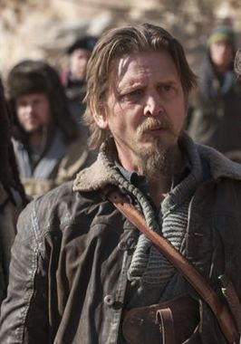
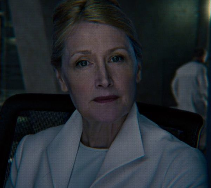

Présentation
Le Labyrinthe: La Terre brûlée ou Maze Runner : The Scorch Trials est un film américain de science-fiction et d'aventure réalisé par Wes Ball. Le film est sorti en octobre 2015. Il s'agit de l'adaptation du deuxième tome de L'Épreuve de James Dashner et constitue la suite du film Le Labyrinthe.
Synopsis
Thomas et les autres Blocards vont devoir rechercher des indices à propos de la mystérieuse organisation connue sous le nom de WICKED. Or le monde qu’ils découvrent à l’extérieur du Labyrinthe a été ravagé par le virus Braise. Leur périple les amène à la Terre Brûlée, un paysage de désolation rempli d'obstacles. Plus de gouvernement, plus d'ordre… et des hordes de gens en proie à une folie meurtrière qui errent dans les villes en ruine. Les Blocards vont devoir unir leurs forces avec d'autres combattants pour pouvoir affronter WICKED et tenter de défier son immense pouvoir.
Résumé
Thomas se réveille dans l'hélicoptère, peu de temps après avoir été sauvé du Labyrinthe. Lui et les blocards restants - Newt, Minho, Teresa, Frypan, Winston, Jack et Tim - sont emmenés dans un centre géré par Janson. En arrivant sur les lieux, ils doivent faire face à un groupe d'individus infectés par le virus braise appelés "fondus". Ils sont secourus par des hommes armés qui travaillent pour Janson. Ce dernier explique que l'établissement les protège contre WICKED et le virus Braise. On leur fournit vêtements, soins, nourriture et lits comme aux autres survivants de multiples labyrinthes. Régulièrement, plusieurs d'entre eux quittent le centre pour un havre de paix, que Janson surnomment "de plus verts paturages", supposés être un lieu pour commencer une nouvelle vie. Thomas tente de savoir ce qui se passe avec l'aide d'Aris, le premier arrivé au centre une semaine auparavant et rencontré en même temps que David et Riley, il découvre que les survivants emmenés sont en fait utilisés comme cobayes pour des expériences médicales. Ils apprennent également qu'un groupe de résistants, appelé "Le Bras Droit", basé dans les montagnes, lutte contre WICKED et ont déjà attaqués plusieurs de leurs centres. Comprenant qu'ils sont eux aussi condamnés, Thomas et ses amis récupèrent Teresa et s'échappent de l'installation, traqués par Janson et ses troupes. Ils découvrent alors le monde extérieur : la Terre Brûlée.
Le groupe arrive dans un grand supermarché abandonné et tombe sur des humains transformés par le virus Braise, les Fondus, un genre de zombie. Au cours de la fuite, Jack disparaît et Winston est infecté par l'un d'entre eux. Au matin, ils découvrent la ville en ruines alors que WICKED est toujours à leur recherche. Le groupe avance dans le désert jusqu'à ce qu'une nuit, Thomas voit au loin des lumières. Sous une pluie d'éclairs, tous courent jusqu'aux installations pour se protéger. Ils rencontrent Brenda et Jorge qui dirigent une dangereuse bande de survivants. Jorge, sachant que le groupe est constitué d'immunisés précieux, veut rallier le Bras droit, et convient avec Brenda d'emmener les jeunes gens jusqu'à celui-ci, en abandonnant leur propre bande. Peu après, WICKED, dirigé par Janson, attaque l'installation. Thomas et Brenda sont laissés derrière tandis que les autres parviennent à fuir avec Jorge. Thomas et Brenda sont alors confrontés à des Fondus arrivés à terme auxquels ils échappent, mais Brenda est griffée et infectée. Thomas et Brenda rejoignent une ville en ruine. Entraînés dans un bar dirigé par Marcus, ils sont drogués et perdent connaissance. En flashback, Thomas se remémore une époque où il travaillait avec Teresa pour WICKED. À son réveil, il retrouve ses amis et Jorge qui interroge brutalement Marcus : il avoue appâter des sujets pour WICKED et finit par révéler la cachette du Bras Droit dans les montagnes.
Le groupe arrive au camp du Bras droit, où d'autres survivants sont présents. Ils sont fraîchement accueillis par Harriet et Sonya, puis par Vince qui commande le détachement. L'infection de Brenda empire et Vince menace de l'abattre. Mais il est arrêté par Mary Cooper, une ancienne scientifique de WICKED qui révèle que Thomas était leur informateur dans le labyrinthe. Elle arrête l'infection de Brenda en utilisant un traitement enzymatique à partir d'un prélèvement sur Thomas, et leur explique que l'enzyme ne peut être récoltée qu'à partir du corps d'un immunisé.
Le soir même, Teresa raconte à Thomas la terrible agonie de sa mère atteinte par le Braise, ce qui justifie sa volonté de tout faire pour débarrasser l'humanité de ce fléau en révélant à WICKED l'emplacement du camp de la résistance. Les hommes de WICKED arrivent alors en hélicoptères et attaquent le camp. Immunisés et résistants sont capturés. Ava Paige arrive ensuite et s'explique devant tous les captifs sur la trahison de Teresa. Mary Cooper interpelle alors Ava Paige, mais elle est abattue par Janson. Ava Paige donne l'ordre d'embarquer, mais Thomas saisit une bombe et menace de tout faire sauter. Minho, Newt. Jorge déboule alors dans une voiture, couvert par les tirs de Brenda, et un nouveau combat s'engage. Plusieurs résistants se libèrent, Vince en tête, et forcent à la retraite les troupes de Janson et d'Ava Paige en hélicoptère, Teresa embarquant avec eux. Le WICKED est repoussé mais plusieurs immunisés sont capturés, dont Minho. Le lendemain,Thomas veut aller sauver Minho avec les survivants, car son objectif est désormais de tuer Ava Paige.
Casting
| Nom de l'acteur | Rôle dans le film |
|---|---|
| Dylan O'Brien | Thomas |
| Kaya Scodelario | Teresa |
| Thomas Brodie-Sangster | Newt |
| Will Poulter | Gally |
| Ki Hong Lee | Minho |
| Dexter Darden | Siggy |
| Rosa Salazar | Brenda |
| Giancarlo Esposito | Jorge |
| Aidan Gillen | Janson |
| Jacob Lofland | Aris |
| Barry Pepper | Vince |
| Katherine McNamara | Sonya |
| Nathalie Emmanuel | Harriet |
| Patricia Clarkson | Ava Paige |
Descriptif
Thomas

Thomas, auparavant Stephen, est un ancien Blocard du groupe A et un des créateurs du Labyrinthe, tout comme Teresa. Son nom lui a été donné par les créateurs en honneur à Thomas Edison.
Teresa

Teresa, auparavant Deedee, est une ancienne Blocarde du Groupe A et un des créateurs du Labyrinthe, tout comme Thomas. Son nom lui a été donné par les créateurs en honneur à Mère Teresa.
Newt

Newt est un ancien Blocard et co-leader du Groupe A avec Alby. Il est décrit comme étant beaucoup plus charismatique. Il est aussi un des seuls Blocards, avec Jackson, à ne pas être immunisé. Son nom lui a été donné par les Créateurs en honneur d'Isaac Newton.
Minho

Minho est un ancien Blocard et le chef des Coureurs. Il est donc endurant mais aussi loyal et sarcastique. Il part souvent au quart de tour et est donc trop spontané voire agressif, bien qu'il soit sans doute le Blocard qui fasse le plus preuve de sens de l'humour. Il est habile avec les armes et est capable d'utiliser diverses armes blanches (couteaux, lances ou même batte avec des barbelés). Par ailleurs, il semble aimer avoir le dernier mot. Son nom lui a été donné par les Créateurs en l'honneur d'un scientifique fictif.
Siggy

Siggy, à l'origine Toby, est un ancien Blocard ainsi que le Chef des Cuistots depuis un an, ce qui lui valu le surnom de Poêle-à-frire. Son vrai prénom est Toby. Son nom lui a été donné par les Créateurs en honneur à Sigmund Freud.
Brenda

Brenda apparait pour la première fois dans La Terre Brûlée. Elle travaille pour le WICKED. Jorge la surnomme hermana et la considère comme "sa fille".
Jorge

Jorge apparaît pour la première fois dans L'Épreuve : La Terre Brûlée, et travaille pour le WICKED.
Vince
Vince est le leader du Bras Droit.
Mary Cooper
Mary Cooper est un ancien médecin travaillant pour le WICKED, ainsi qu'un membre du Bras Droit. C'est un personnage exclusif au film.
Sonya
Sonya était une des leaders du Groupe B avec Harriet de qui elle semble être très proche. En plus d'être la sœur de Newt, elle est aussi son équivalent dans le Groupe A en raison de leurs similitudes au niveau de leurs rôles, de leur personnalité et de l'apparence. Son vrai nom est Elizabeth.
Harriet

Harriet apparaît pour la première fois dans La Terre Brûlée. Elle est l'équivalent d'Alby dans le Groupe A du fait de leur apparence, personnalité et rôle communs. Son nom lui fut donné par les Créateurs en honneur à Harriet Tubman.
Aris
Aris es un ancien Jobard du Groupe B mais aussi un des Créateurs du Labyrinthe, tout comme Thomas et Teresa, son équivalent dans le Groupe A. Son nom lui a été donné par les Créateurs en hommage au philosophe Aristote.
Janson

Le Directeur Adjoint Janson apparaît pour la première fois dans La Terre Brûlée. Il est le directeur-adjoint du WICKED et le messager pour Thomas et ses amis. Il est surnommé l'homme-rat par les Blocards (Minho est à l'origine de son surnom) à cause de son apparence de "rat transformé en humain".
Ava Paige
La Chancelière Ava Paige apparaît dans chaque épilogue des trois tomes, qui se compose d'une note de celle-ci et devient un personnage plus important dans Le Remède Mortel.
WICKED

World In Catastrophe : Killzone Experiment Department (signifiant littéralement Monde Sinistré : Département Expérience de la Zone mortelle), généralement abrégé WICKED (qui signifie "méchant" en anglais) est une organisation créée dans le but de trouver un antidote à la Braise. Après les éruptions solaires, les gouvernements internationaux restants combinèrent leurs ressources pour former cette organisation. Afin de réaliser cette expérience, ils sélectionnèrent une centaine d'enfants entre 12 et 17 ans, pour la plupart immunisés contre la Braise. Ils leur firent passer plusieurs tests comme le Labyrinthe ou la Terre Brûlée qui incluaient des Epreuves conçues pour stimuler la Zone mortelle ou le cerveau dans le but d'enregistrer des modèles spécifiques. Ils avaient prévu d'utiliser ces modèles afin de découvrir ce qui rendait le cerveau de ces enfants capable de résister à la Braise et donc de créer un remède.
Bras droit

Le Bras Droit fut créé quelques années avant le début des Epreuves, mises en place par le WICKED. Ses membres cherchent un moyen de pénétrer dans le siège du WICKED afin de le détruire et ainsi libérer tout les candidats des Epreuves. Les moyens et les ressources du Bras Droit sont bien plus limités que ceux du WICKED. Ils ne possèdent en effet que trois bergs. Cependant on apprend qu'en réalité leur but est de prendre la place du WICKED.